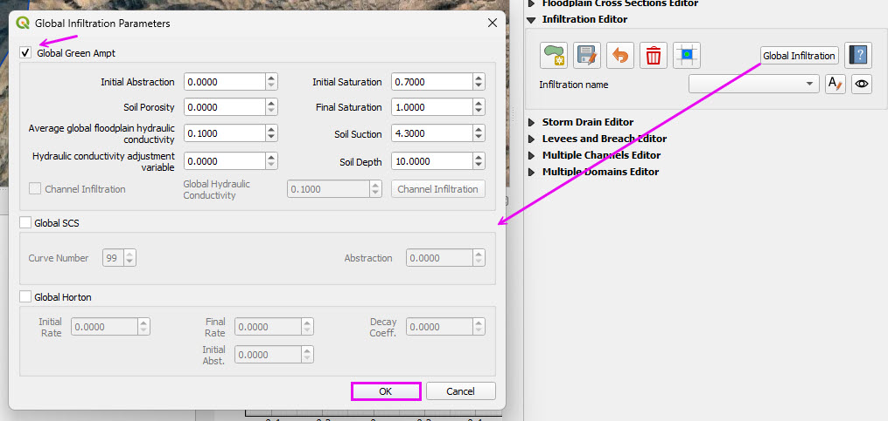
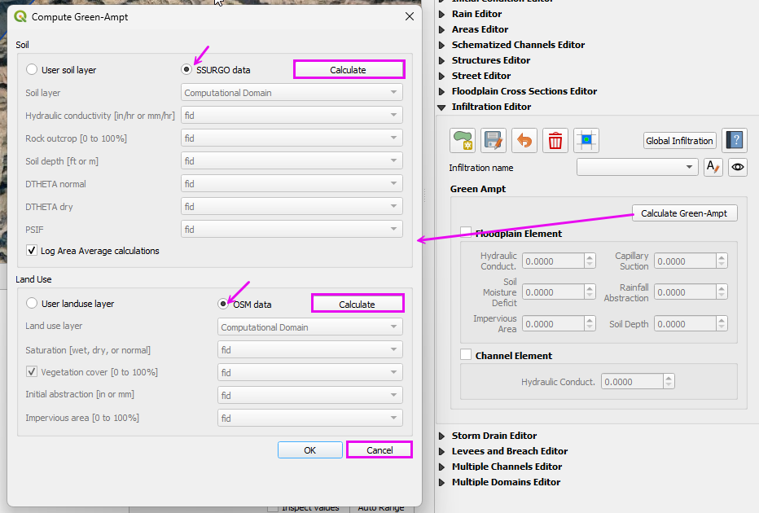
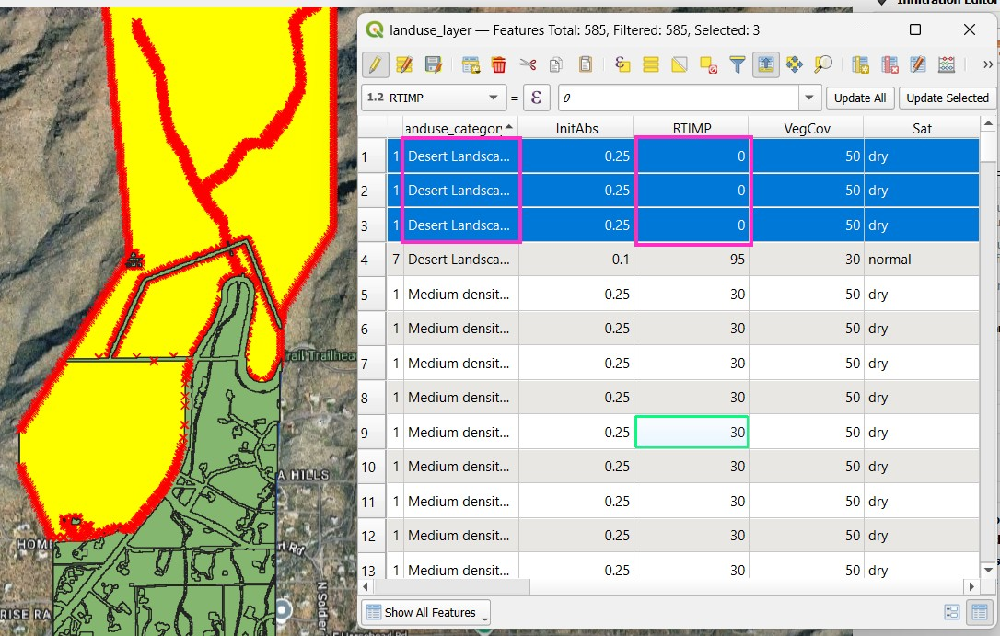
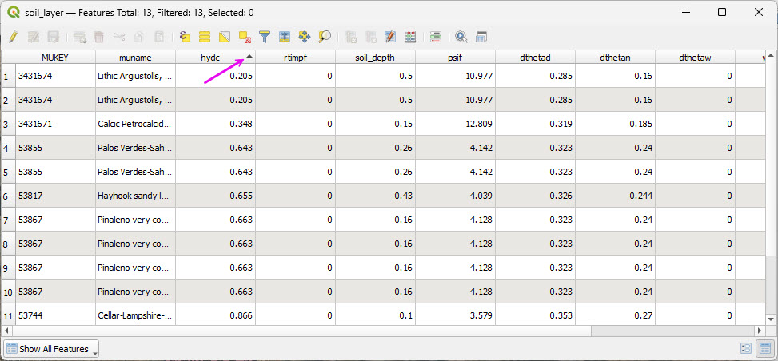
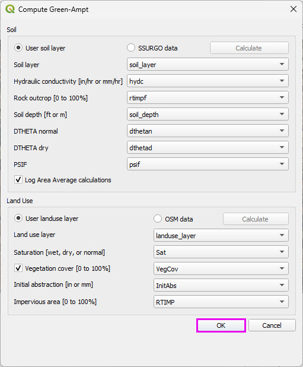
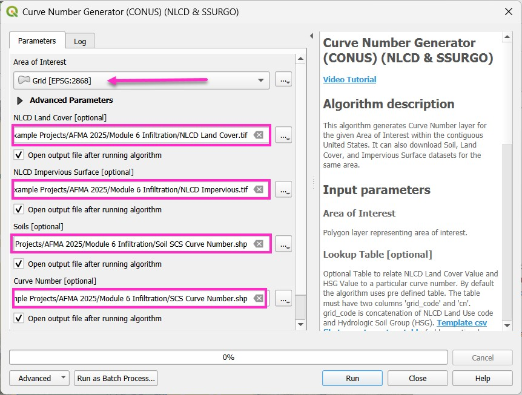
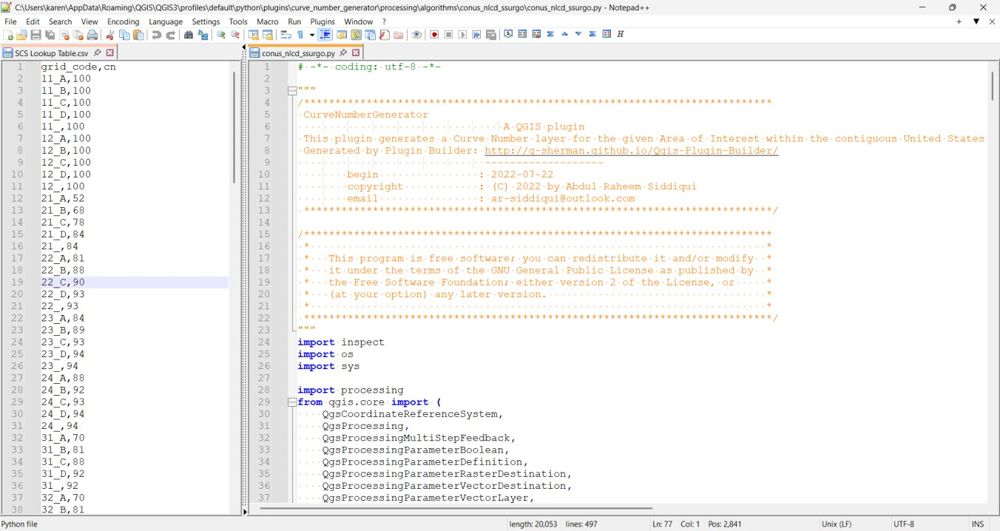

Module 6 - Process Infiltration Data
Choose one method: Green-Ampt or SCS.
Green-Ampt Method
These agencies use Green-Ampt infiltration data with FLO-2D.
FCDMC, AZDOT, NVDOT, PCRFCD
Step 1: Run the Green Ampt Processor
Open the Infiltration Global button and check Green-Ampt and SCS CN.
Click OK

Click Calculate Green Ampt button and set the radio buttons to SSURGO and OSM and use the Calculate buttons to get data.
Cancel the final process.
The data QC is performed in the next step.

Step 2: Review the LandUse data
Open the attribute table of the LandUse layer.
Some polygons are categorized as Medium Density Residential with a 30 RTIMP.
Change these areas to Desert Landscape with 0 RTIMP.
Select the polygons with the polygon selector.

Open the attribute table of the Soil layer.
Sort all of the pertinent columns by high low to verify that the values are within a reasonable range.
Spot checking polygons is also recommended to determine if the data is valid.

Save the two layers to Module 6 folder and add them to the Infiltration Group.

SCS Curve Number Method
Many agencies and clients use the SCS Curve Number (CN) method for rainfall-runoff modeling. In the Southwestern United States, Pima County Regional Flood Control District has developed a well-documented and regionally calibrated CN methodology that reflects desert hydrology and local soil conditions.
For reference, see the Pima County guidance:
PCHydro User GuideWarning
This workshop demonstrates use of the Curve Number Generator tool in QGIS in combination with the Desert Curve Number lookup table from TR-55 to represent arid watershed conditions.
This workflow is provided for instructional purposes and does not reflect the recommended methodology for Pima County.
A more comprehensive QGIS-based procedure, incorporating updates to the FLO-2D Plugin, will be provided in a future tutorial.
Step 1: Run the Curve Number Generator
Load the Curve Number Generator from the Processing Toolbox.
Download the data only.
The final process will be completed after modifying the lookup table.

Step 2: Review the CN lookup table
Modify the lookup table to apply the TR-55 Desert CN values.
The table may also be adjusted to reflect local agency standards where required.
The processing model can be adapted to connect to local servers if needed.
The plugin developer is responsive to enhancement requests.
